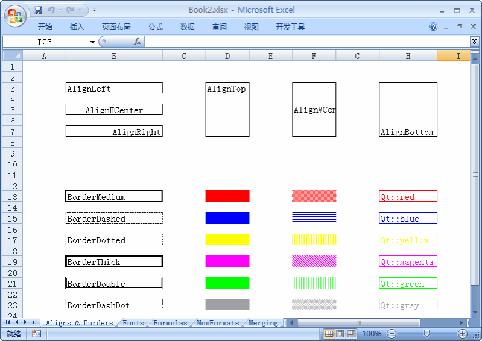

Qt Xlsx
The Qt Xlsx Module provides a set of classes to read and write Excel files. It doesn't require Microsoft Excel and can be used in any platform that Qt5 supported. The library can be used to
- Generate a new .xlsx file from scratch
- Extract data from an existing .xlsx file
- Edit an existing .xlsx file

| Source code: | https://github.com/dbzhang800/QtXlsxWriter |
| Issures: | https://github.com/dbzhang800/QtXlsxWriter/issues |
| License: | MIT |
Getting Started
To include the definitions of the module's classes, using the following directive:
#include <QtXlsx>
To link against the module, add this line to your qmake .pro file:
QT += xlsx
More information can be found in Qt Xlsx Build page.